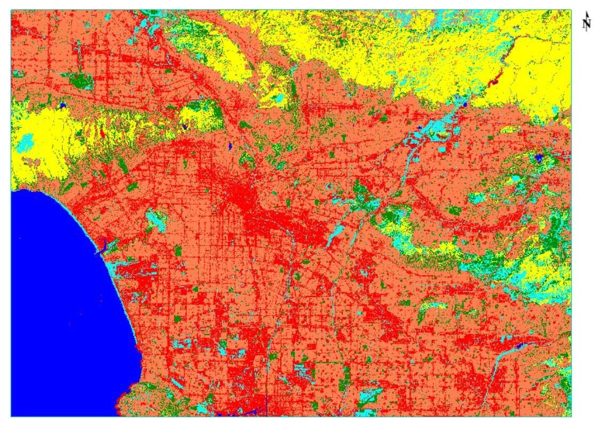

Remote Sensing & Earth Observation

Urban Land-Cover Classification of Los Angeles
Classified urban land cover across Los Angeles for 2022 and 2024 with Maximum Likelihood classification in ENVI, with accuracy assessment, presented as a report and slide deck.
- Location
- Los Angeles, USA
- Year
- 2024
- Client
- Practice study
- Tools
- ENVI, Landsat, Maximum Likelihood


Approach
- Satellite scene preparation
- Image classification in ENVI
- Accuracy review
- Report and slides
Result
Land-cover maps for 2022 and 2024, confusion-matrix accuracy assessment, written report and presentation.
Practice study: course and client details omitted.